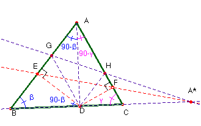
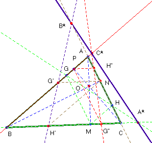

Problema 88
En un triángulo ABC supongamos que AD es una altura. Supongamos además que las perpendiculares trazadas desde D cortan a los lados AB y AC en E y F, respectivamente.
Supongamos en fin que G y H son los puntos de AB y AC, respectivamente, tales que DG//AC (paralelos) y DH//AB.
Demostrar que
(a) EF y GH se cortan en A* sobre BC.
Definiendo B* y C* de manera análoga, demostrar que
(b) A*, B* y C* son colineales.
Solución .-
Saturnino Campo Ruiz, profesor de Matemáticas del I.E.S. Fray Luis de León (Salamanca) (21 de abril de 2003)

Llamemos I y J a los puntos de corte de las rectas GH y EF con BC respectivamente.Aplicando a las dos primeras el teorema de Menelao, para los segmentos orientados que determinan en el lado BC se tienen las siguientes relaciones:
(1) y (2) .
De la semejanza de los triángulos BGD y DHC se tiene para los segmentos no orientados ; llevado a (1) resulta (3). De otra parte (ED)2= EB · EA por ser la altura sobre la hipotenusa en ADB y (FD)2 = AF · FC por la misma razón en ADC.
De la semejanza de los triángulos BED y ADB por una parte y DFC y DFA de otra es y . Así pues llevado a (2) nos da
(4). Igualando (3) y (4) se obtiene , o lo que es igual, la razón doble de los puntos I, J, B y C es igual a la unidad, lo cual sólo es posible si son iguales I y J. Por tanto, I = J=A*, como se quería probar: las rectas BC, EF y GH concurren en el punto A*, y .
Siguiendo el método indicado en la primera parte, construimos puntos B* y C* sobre los otros dos lados del triángulo, utilizando, por ejemplo el paralelogramo en vez de las perpendiculares. Para ver si estos tres puntos son colineales, nuevamente haremos uso del teorema de

Menelao. Se ha de verificar .En la parte anterior hemos obtenido , donde llamo M, N y P a los pies de las alturas trazadas desde cada vértice del triángulo según se ve en la figura.
Vemos que la razón simple entre los dos segmentos en que divide al lado el punto A*, es igual al cuadrado de la razón entre los segmentos obtenidos al sustituir el punto A* por el pie de la altura M. Según esto, podremos poner para los otros puntos:
y como las alturas son cevianas, ese producto es el cuadrado de la relación de Ceva para ellas, es decir, (-1)2 = 1. c.q.d.